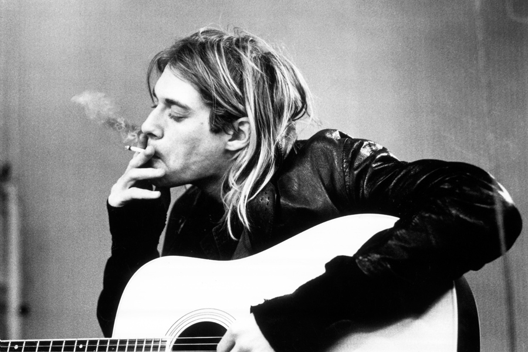
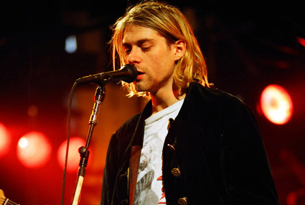

Biography
 Nirvana was an American rock band formed in Aberdeen, Washington, in 1987. It was founded by lead singer and guitarist Kurt Cobain and bassist Krist Novoselic. Nirvana went through a succession of drummers, the longest-lasting and best-known being Dave Grohl, who joined in 1990. Though the band dissolved in 1994 after the death of Cobain, their music maintains a popular following and continues to influence modern rock and roll culture.
Overall, Nirvana has received twelve awards from twenty-five nominations winning an American Music Award, Brit Award, Grammy Award, seven MTV Video Music Awards and two NME Awards Since its debut, the band has sold over 25 million records in the United States alone, and over 75 million records worldwide, making them one of the best-selling bands of all time. Nirvana has also been ranked as one of the greatest music artists of all time with Rolling Stone placing them at number 27 on their list of the "100 Greatest Artists of All Time" in 2004, and at number 30 on their updated list in 2011. Nirvana was inducted into the Rock and Roll Hall of Fame in 2014, in its first year of eligibility.
Music Style and Impact
 Cobain described the sound of Nirvana when it first started as "a Gang of Four and Scratch Acid ripoff". Later when Nirvana recorded Bleach, Cobain felt he had to fit the expectations of the Sub Pop grunge sound to build a fanbase, and hence suppressed his arty and pop songwriting traits while crafting the record in favor of a more rocking sound. Nirvana biographer Michael Azerrad argued, "Ironically, it was the restrictions of the Sub Pop sound that helped the band find its musical identity". Azerrad stated that by acknowledging that its members had grown up listening to Black Sabbath and Aerosmith, the band was able to move on from its derivative early sound.
Award, seven MTV Video Music Awards and two NME Awards Since its debut, the band has sold over 25 million records in the United States alone, and over 75 million records worldwide, making them one of the best-selling bands of all time. Nirvana has also been ranked as one of the greatest music artists of all time with Rolling Stone placing them at number 27 on their list of the "100 Greatest Artists of All Time" in 2004, and at number 30 on their updated list in 2011. Nirvana was inducted into the Rock and Roll Hall of Fame in 2014, in its first year of eligibility.
Details
members
- Kurt Cobain
- Dave Grohl
- Krist Novoselic
- Pat Smear
- Chad Channing
- Jason Everman
- Aron Burckhard
- Dale Crover
- Dave Foster
- Dan Peters
background
- Guitars (1987 - 1994)
- Drum Kits (1990 - 1994)
- Bass Guitar (1987 - 1994)
- Vocalist (1993 - 1994)
- Drum Kits (1988 - 1990)
- Vocalist (1989 - 1989)
- Drum Kits (1987 - 1987)
- Guitars (1988 - 1988)
- Drum Kits (1988 - 1988)
- Drum Kits (1990 - 1990)